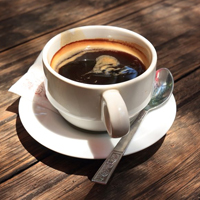

725-60-60") +7(353)725-60-60
+7(353)725-60-60
Кофе Американо
Америка́но (итал. Caffè Americano — кофе по-американски) — способ приготовления кофе, заключающийся в соединении определённого количества горячей воды и эспрессо. Напиток придумали в Италии ещё во время Второй мировой войны для американцев как аналог американского популярного фильтрового напитка «регуляр». Общим у этих двух напитков были лишь большой объём и не очень концентрированный вкус.
Американо готовится из одной или двух порций эспрессо, в который добавляется от 30 до 470 мл горячей воды. В процессе приготовления горячую воду можно брать как из эспрессо-машины, так и из отдельного чайника или подогревателя. Схожим по составу, однако отличающимся по рецептуре является кофейный напиток «Лонг блэк» (англ. Long Black).
Холодный (ледяной) американо — изготавливается путём добавления холодной, а не горячей воды; «Рэд ай» (англ. Red Eye, также известен как «Канадиано») — изготавливается аналогично американо, но с использованием кофе из кофейного фильтра вместо воды.
Американо нельзя выпить залпом, как эспрессо. Поэтому имеет смысл подавать его в бокале для латте с соломинкой, сахарницей или 1–2 стикерами сахара. В офисе удобно пить американо из бумажного стаканчика, потягивая через соломинку.
Напиток можно закусывать теми же продуктами, что и эспрессо: шоколадом, фруктами, твёрдым сыром. Но американо гармонирует и с десертами, выпечкой, причём как со сладкой, так и с солёной. Классическое сочетание – американо с пончиками.